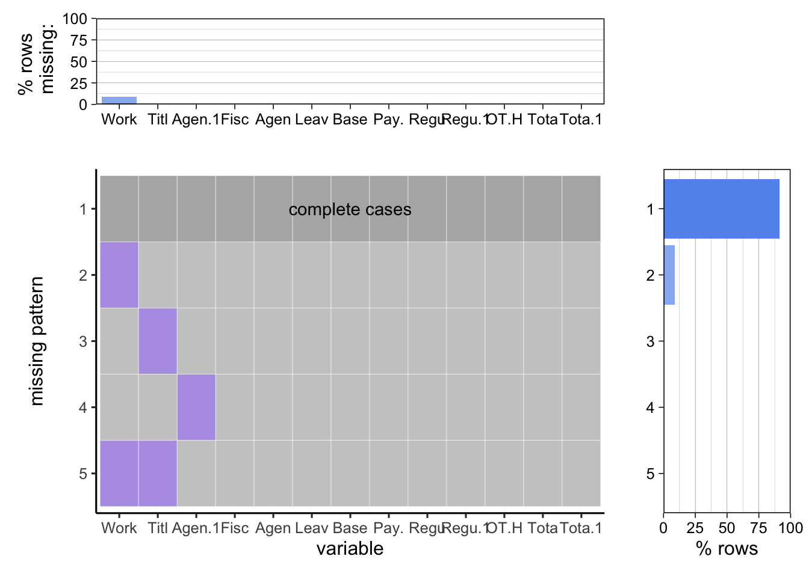

Code
library(ggplot2)
library(dplyr)
library(tidyverse)
library(heatmaply)
library(readxl)
library(knitr)library(ggplot2)
library(dplyr)
library(tidyverse)
library(heatmaply)
library(readxl)
library(knitr)Data sources: The Citywide Payroll dataset is from NYC OpenData website. https://data.cityofnewyork.us/City-Government/Citywide-Payroll-Data-Fiscal-Year-/k397-673e/data
Data collection: Data Provided by Office of Payroll Administration (OPA). Data is input into the City’s Personnel Management System (“PMS”) by the respective user Agencies. It includes the agency information, salary and overtimepay for all municipal employees in New York.
Data description: Data is collected because of public interest in how the City’s budget is being spent on salary and overtime pay for all municipal employees. We will describe it in 6 parts.
We summarize it by a csv file.
description<-read_csv('data_description.csv')
kable(description)| Column Name | Description | Type |
|---|---|---|
| Fiscal Year | Fiscal Year | Discrete variable |
| Payroll Number | Payroll Number | Discrete variable |
| Agency Name | The Payroll agency that the employee works for | Categorical variable |
| Last Name | Last name of employee | Plain Text |
| First Name | First name of employee | Plain Text |
| Mid Init | Middle initial of employee | Plain Text |
| Agency Start Date | Date which employee began working for their current agency | Date & Time |
| Work Location Borough | Borough of employee’s primary work location | Categorical variable |
| Title Description | Civil service title description of the employee | Categorical variable |
| Leave Status as of June 30 | Status of employee as of the close of the relevant fiscal year | Categorical variable |
| Base Salary | Base Salary assigned to the employee | Continuous variable |
| Pay Basis | Lists whether the employee is paid on an hourly, per diem or annual basis | Plain Text |
| Regular Hours | Number of regular hours employee worked in the fiscal year | Continuous variable |
| Regular Gross Paid | The amount paid to the employee for base salary during the fiscal year | Continuous variable |
| OT Hours | Overtime Hours worked by employee in the fiscal year | Continuous variable |
| Total OT Paid | Total overtime pay paid to the employee in the fiscal year | Continuous variable |
| Total Other Pay | Includes any compensation in addition to gross salary and overtime pay | Continuous variable |
It is updated annually.
5662713*13
For numerical data, we will show the upper bound and lower bound.
max_values <- apply(salary[c("Fiscal.Year","Base.Salary","Regular.Hours","Regular.Gross.Paid","OT.Hours","Total.OT.Paid")], 2, max)
min_values <- apply(salary[c("Fiscal.Year","Base.Salary","Regular.Hours","Regular.Gross.Paid","OT.Hours","Total.OT.Paid")], 2, min)
print('upper bound')[1] "upper bound"print(max_values) Fiscal.Year Base.Salary Regular.Hours Regular.Gross.Paid
2023.0 414707.0 6666.0 672308.9
OT.Hours Total.OT.Paid
3692.9 255999.9 print('lower bound')[1] "lower bound"print(min_values) Fiscal.Year Base.Salary Regular.Hours Regular.Gross.Paid
2014.00 0.01 -1872.77 -205451.85
OT.Hours Total.OT.Paid
-209.00 -26493.88 For categorical data, we will show all labels and counts.
#table(salary[c("Agency.Name")])
salary$Work.Location.Borough <- toupper(salary$Work.Location.Borough)
table(salary[c("Work.Location.Borough")])Work.Location.Borough
ALBANY BRONX BROOKLYN DELAWARE
506233 143 261021 473638 802
DUTCHESS GREENE MANHATTAN NASSAU ORANGE
231 89 3665561 361 25
OTHER PUTNAM QUEENS RICHMOND SCHOHARIE
112598 360 562748 69368 262
SULLIVAN ULSTER WASHINGTON DC WESTCHESTER
1214 2925 64 5070 #table(salary[c("Title.Description")])
table(salary[c("Leave.Status.as.of.June.30")])Leave.Status.as.of.June.30
ACTIVE CEASED ON LEAVE ON SEPARATION LEAVE
4783700 756163 65722 10284
SEASONAL
46844 There exists negative regular hours and OT hours and agency start date exists 12/31/9999.
We download Citywide Payroll dataset on NYC OpenData website in ‘csv’ format and impute it by read.csv function directly and the link of our data source is https://data.cityofnewyork.us/City-Government/Citywide-Payroll-Data-Fiscal-Year-/k397-673e/data
Based on our research questions regarding various factors influencing salary levels and overtime situations in the workplace, we will divide our project into two parts, including total annual salary analysis and overtime analysis.
First, we aim to examine the factors that influence salary. These factors encompass year, agency, agency start date, work location, job title, pay basis, and leave status at the end of the fiscal year. Given that these factors encompass both categorical and continuous variables, our objective is to establish the connection between them and salary. Consequently, our analysis will be bifurcated into two components: the examination of the influence of categorical factors on salary, and the exploration of the impact of continuous variables on salary. This approach will enable us to identify the most salient factors significantly affecting salary, warranting a more detailed investigation.
Concerning year trends and patterns, we aim to understand how salaries have evolved over the past ten years and identify any noticeable trends in employee compensation during specific periods, such as economic downturns or budget cuts. The ‘Year’ field allows for a temporal analysis, facilitating year-over-year comparisons of salaries, thereby revealing trends and patterns over time. Next, we will conduct an agency-specific analysis. Given the potential for significant salary differences across agencies, we seek to determine which agencies have the highest and lowest salaries and understand the reasons behind these disparities. Here, we need to pay attention that low salary accompanied by fewer regular work hours may be indicative by a part-time job. The ‘Agency Name’ field will be used to group data by agency, enabling comparisons of salaries across different departments or units. Regarding the impact of agency start time, we will explore whether the length of time an agency has been operational affects its employees’ salaries. Analysis of the ‘Agency Start Date’ will help investigate if newer agencies offer different pay scales compared to well-established ones.
We will also examine geographical disparities, job title, and compensation analysis, as well as the impact of leave status and pay basis on compensation. We will explore how factors like work location, job title, leave status, and pay basis affect salaries. The ‘Work Location Borough’ field will assist in examining if geographic factors influence compensation, considering cost-of-living variations across different boroughs. ‘Job Title Description’ allows for an analysis of salary and overtime payments by role, identifying positions with higher compensation and the reasons behind it. ‘Leave Status’ at the fiscal year’s end will be correlated with total compensation to understand how leave impacts an employee’s overall earnings. ‘Pay Basis’ (monthly, yearly, hourly) will be correlated with overall compensation to understand how different payment structures affect total earnings.
In this part, we are curious that this overtime work module in different work field or work year. Here we will create a new column called ‘agency size’ based on calculating the number of staffs in different agencies and we will add it into our influence factor test as well. To solve it, we identify patterns and causes of overtime across agencies and job titles by aggregating overtime hours and salaries by job title and agency(agency field, agency start time,year,Work location, agency size), we can highlight where overtime is most common. As for trends in overtime hours and overtime paid: By analyzing ‘OT Hours’ and ‘OT Paid’ across different fiscal years, we can detect any increasing or decreasing trends in overtime. Line graph for overtime hours&salaries is the optimal method to identify their trends over time.
We also explore the ratio of regular to overtime hours&salaries across different agencies. We can calculate this ratio for each agency by aggregating ‘Regular Hours’&‘Base Salary’ and ‘OT Hours’&‘OT Paid’ and then compare across agencies. Heatmap is one of our methods to demonstrate the distribution and prevalence of overtime across different job titles and agencies, identifying hotspots. After finishing it, we can compare the consistence of high ration and high overtime hours&salaries by bubble chart where the position on the x-axis can represent overtime hours, the y-axis for the overtime ratio, and the bubble size for agencies or job titles.
salary <- salary %>%
mutate(across(where(is.character), ~na_if(., "")))
missing_values <- sapply(salary, function(x) sum(is.na(x)))
print(missing_values) Fiscal.Year Agency.Name
0 0
Agency.Start.Date Work.Location.Borough
63 506233
Title.Description Leave.Status.as.of.June.30
96 0
Base.Salary Pay.Basis
0 0
Regular.Hours Regular.Gross.Paid
0 0
OT.Hours Total.OT.Paid
0 0
Total.Other.Pay
0 # Creating the bar chart
ggplot(data = data.frame(Column = names(missing_values), MissingValues = missing_values),
aes(x = Column, y = MissingValues)) +
geom_bar(stat = "identity") +
theme(axis.text.x = element_text(angle = 90, hjust = 1)) +
labs(x = "Column Name", y = "Number of Missing Values", title = "Missing Values per Column")
library(redav)
df<-salary
colnames(df) <- substr(colnames(df), 1, 4)
plot_missing(df)Scale for y is already present.
Adding another scale for y, which will replace the existing scale.
Scale for y is already present.
Adding another scale for y, which will replace the existing scale.
After we delete meaningless data like “Payroll.Number”, “Last.Name”, “First.Name”, “Mid.Init”, there is still one column for work location have missing values and we will delete the rows with missing values.
salary_cleaned = na.omit(salary)
colSums(is.na(salary_cleaned)) |> sort(decreasing=TRUE) Fiscal.Year Agency.Name
0 0
Agency.Start.Date Work.Location.Borough
0 0
Title.Description Leave.Status.as.of.June.30
0 0
Base.Salary Pay.Basis
0 0
Regular.Hours Regular.Gross.Paid
0 0
OT.Hours Total.OT.Paid
0 0
Total.Other.Pay
0 write.csv(salary_cleaned, "~/edav_lz_sm/Cleaned Dataset.csv", row.names=FALSE)